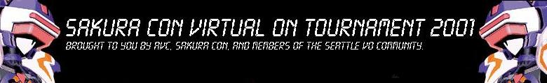

Saturday April 28th, 2001
The Sakura Con Tournament
... or "
the royal rumble
" tournament...
Holiday Inn & Convention Center
(in Everett) |
Organizer Contact Information: |
101 128th Street SE
Everett, 98208
(425) 337-2900 or (800) 465-4329
|
Scott Robinson
(425) 432-3532 (home phone)
scott_sakura@dsn.itgo.com
|
Currently
DONE
At:
Sakura Con Console Gaming Area
-
Starting 11pm
Attending:
Oh please, like I could list
Hardware List
I offloaded the hardware list to my notes file.
Welcome to the Sakura Con 2001: Tournament Report
I'm really happy about how the tournament came off. So happy and so busy,
that it's now a week later and I'm writing up the tournament summary... at
least, as much as I have in my head. With netplay VOOT coming along so well,
expect this to be a bit fragmented.
So how did it work?
The tournament was setup in a two phase system. We did it this way so all
the newbies would have an opportunity to get some quality gameplay in, while
at the same time eliminating it all down to the best. I think it worked out
pretty well.
Phase 1: The Cube
Originally I wanted it to be a team system, but Frank modified it into a
segment round-robin cube. Four players in each cube played each other at
least once. Depending on your gameplay, you were given a certain number of
points:
- +1 Point for each round won.
- +3 Points for each match won.
Phase 2: Single Elimination
Quickly running out of time, what was originally going to be a
double-elimination bracket turned into a single-elimination bracket between
the top 8 ranked players from Phase 1.
| Scott Margerum |
|
|
|
|
|
Tom Music |
| Ben Wilhelm |
|
|
Winner: |
|
|
Jason Chase |
|
Scott Margerum |
|
Kirk Kosinski |
|
Tom Music |
|
|
Kirk Kosinski |
|
|
|
Matt Gehr |
|
| Kirk Kosinski |
|
|
|
Matt Gehr |
|
Michael van Itterbeek |
| Patrick McCoffery |
|
|
|
Mark Gehr |
|
Matt Gehr |
|
|
|
Matt Gehr |
|
|
|
|
|
|
Kirk Kosinski |
|
|
|
| Mark Harman |
|
Kirk Kosinski |
|
|
|
Evan Smith |
| Scott Robinson |
|
Scott Robinson |
|
|
|
Jeremy Riner |
|
Scott Robinson |
|
|
|
Evan Smith |
|
|
Rod Datoc |
|
|
|
Mark Gehr |
|
| Alan Graham |
|
|
|
|
|
Mark Gehr
|
| Rod Datoc |
|
|
|
|
|
Nathan Strong
|
The
Replays are here.
Kirk's Pics
The Morning After, kinda
It's actually the Monday after since both the Holiday Inn and the Motel 6
didn't want to give anyone Ethernet access. Of course, when we finally
reconfigured my machine and spent about 6 hours obtaining equipment (read:
56k modem) for modem access, the Con Chair walked in and said
"No." Thus: I'm writing my summary later. Right now, I have school.
:-)
What can I expect once I you back from school, Scott?
- Some damn amazing replays from the tournament.
- Some even more amazing replays from outside the tournament.
- A play by play of the whole thing
- Genuine scans of various cool documents that layed around
- My dissertation on hot anime chicks
CENSORED
I was at Sakura Con all damn last night (Thursday) taking care of
"arrangements." (read: waiting our ass off with a bunch of unfriendly
staffers) I just woke up late. The cell phone number is (206) 779-9184.
God damn it
Not enough cabling for complete display solutions. I'll need to bring, at
least, one monitor. I'm going to stop out in Seattle and buy more cablings.
Woo. Check out the hardware list for those of you sickos who want to know
what all this entails.
Final Arrangements?
If there is anything you haven't taken care of with me or need me to get in
contact with you about. This definately includes things that we
"confirmed" but I haven't called and annoyed you about for at least a
week. E-mail the proper
people.
New Banner?
I get knocks about the website quality and lack of graphics. Now you can
whine about there being too much. Sam contributed a new banner. I can't
bring myself to remove the original. You decide.
Attendence Caps
Sakura Con has implemented attendence caps. I've begged and pleaded with the
staff, but to no avail. Heh. In short, if you're coming for the tournament
and can't wake up at 7am to get there by 8am (PLEASE DO THIS), send
em off an e-mail. I'll see what I can do about purchasing tickets in the
morning and then you paying me back.
He's a hard work'n man...
Everyone works much harder than me. I'm a person who delegates. See the
lovely banner? There's more where that came from. Send
off your thanks to Mark G..
Warm-Ups
In case you didn't notice, there is a warm-ups
gathering in Seattle.
Time and Date Lockdown
By overwhelming majority: Saturday April 28th at 11pm until 2am is the
tournament time. Late, yes, but you're coming early to watch stupid amounts
of anime, right?
(I personally liked the Friday time.)
Publicity Blues
Anthony Chau, of IGN fame, has said he'll post our tournament information;
however, we need to finalize the prize information. Bah.
Sakura Con is helping out, but if anyone has any hotter ideas? Send them to the list. MAGIC HAPPENS HERE, and then I post an official
prize list.
Do your part: VOLUNTEER
If you're going to Sakura Con, please donate a few hours of your off-time
and volunteer in the video games area. Contact Frank. :-)
You pick the time!
I hate picking times. It's always easier for me to offload it on someone
else's (usually the hosts) shoulders. Obviously, I'm not a very good
organizer. However, Frank has been immensely helpful allowed me to choose
the time of the tournament. Oh joy.
Your Options: If you choose to accept them
| Friday |
Saturday |
| 7pm - 10pm |
11am - 2pm
or
11pm - 2am
(WON)
|
In the case of the Saturday, 11pm - 2am, if you don't have a three day pass,
you must leave the con at the end of the tournament.
Stickers!
Mark is heading out either later tonight (Saturday) or tomorrow (Sunday) to
create stickers we can put on our equipment. I'll post the image to be
splatted on this page so we can all marvel out our coolness. ;-)
I have no clue why I posted this.
Equipment Issues, part 3 of a multi-part series
Mark G. spoke to Mark H.. Mark H. sent an e-mail to Scott R.. Scott R. is
happy. Mark H. has offered his link cables, twin-sticks (broken,
but I can fix), DC, and VGA Box. Don't mind I we do? ;-) Once I receive
back a confirmation e-mail, I will be updating the hardware list.
Equipment Issues, part 2 of a multi-part series
Lordie God! Dave has agreed to let us use his DC in site two at Sakura Con.
Now we just need to somehow handle the small issue of two more twin sticks.
;-)
Ladies and Gentlemen, this is the main event!
I don't know why I've been on this whole boxing streak. Hopefully, it'll
disppear from my vocal nuances when all of this is over. However, you're not
here to read about me; you're here to read about the multi-state,
multi-level tournament. Eh?
Equipment Issues, part 1 of a multi-part series
I've been building up as the years have stretched on; however, not even I
can completely equip this tournament. Sakura Con has requested two complete
Dreamcast 5.45 sites. We must supply. See the above for the current hardware
filled out. If anyone can help out with items listed with "???"s, I
would be very appreciate. I'm not above sexual offers. (please,
don't beat me...) Expect me to be
e-mailing around and hitting people up for items.
But what if my Twin Sticks get broken?
Sakura Con enters into a contract with us
(me); while they have the equipment, it's their problem. However, if it
doesn't come back in the shiny quality we gave it to them in, full
reimbursement. Besides, I can repair twin sticks. Thus, you get your shiny
new pair and a crappy reinforced repaired pair. How can you lose?
I'm sold. I'm coming. When should I buy tickets for?
Well, I'm buying tickets for the whole three day event. Damn, it just looks
that smooth! However, if you're only coming for the VO, or if you're only
coming for your favorite anime,
you'll want to know exactly when the tournament is scheduled for.
Duh.
Fine, fine. I'm sorry, but I can't give an exact time yet. When it's
determined, it will be posted on the top of this page and on Sakura Con's
page. Right now, Friday afternoon (7pm) and Saturday morning
(10am) are the most probable times...
GROOOAAAAN
I know. I'm working on getting a better time! Maybe 3pm-6pm or
11pm-2am, Saturday? Look, we can't compete with Tekken Tag Tournament
(7pm-10pm, Saturday), so let's see what we can arrange?
Whatever
No matter when the actual tournament is, there will be open play the entire
con. I'll be stopping in when Nadesico and Cowboy Bebop aren't playing, so
you can expect some funk soul flavor at least from me.... let alone some
percentage of the three thousand other attendees.
Last Updated: Mon Aug 13 09:13:37 PDT 2001 - Scott (final)
Previous Gatherings: Index